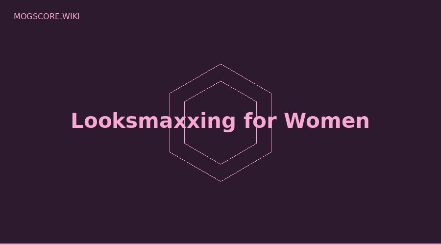

Two approaches dominate looksmaxxing: softmaxxing (non-invasive) and hardmaxxing (surgical or extreme). Understanding the difference — and which tier of intervention makes sense for you — is the foundation of an effective looksmaxxing strategy.
What is Softmaxxing?
Non-Invasive Interventions That Cost Nothing
Softmaxxing covers all reversible, non-invasive improvements that don't permanently alter your body. This is where 90% of looksmaxxing results come from for most people. Examples include:
- Skincare routine (cleanser, niacinamide, SPF)
- Body fat reduction through diet and gym
- Haircut and grooming optimization
- Sleep optimization
- Mewing and tongue posture
- Camera and lighting setup for Omoggle
- Style and clothing choices
- Posture correction
Softmaxxing is where everyone should start. It's free or low-cost, reversible, carries no medical risk, and produces real results that persist long-term when maintained. See: complete looksmaxxing beginner guide.
What is Hardmaxxing?
Surgical and Permanent Structural Changes
Hardmaxxing refers to more extreme interventions that permanently alter physical structure, primarily surgical procedures. Examples include:
- Jaw surgery (orthognathic)
- Lateral canthoplasty (canthal tilt correction)
- Rhinoplasty (nose reshaping)
- Chin implants or genioplasty
- Cheekbone implants
- Filler injections (semi-permanent)
- Hair transplant
Hardmaxxing is for people who have fully maximized their softmaxxing potential and still have specific structural issues they want to address. It's expensive, carries medical risk, and results are permanent.
The Softmaxxing Ceiling
Have You Actually Reached It?
Most people never reach their softmaxxing ceiling. Someone at 22% body fat with poor skin, bad posture, and no skincare routine has enormous softmaxxing potential — reaching it will produce more visible change than any surgical procedure at that stage.
A useful rule: if you can't maintain 12–15% body fat, haven't built a consistent skincare routine, and don't sleep 8 hours consistently, you haven't reached your softmaxxing ceiling. Get there first.
How This Applies to Omoggle
All six of Omoggle's AI metrics can be improved through softmaxxing to some degree:
- Facial symmetry — posture correction, sleep position
- Canthal tilt — camera angle optimization (immediate), body fat (reveals natural tilt)
- Jawline — body fat reduction (biggest impact), gym training
- Cheekbones — body fat reduction
- Skin clarity — skincare routine (most improvable metric)
- Overall harmony — all of the above combined
The only metric where hardmaxxing provides a clear advantage that softmaxxing cannot replicate is canthal tilt — lateral canthoplasty directly repositions the outer eye corner. Everything else responds meaningfully to softmaxxing.
See exactly how your current softmaxxing level translates to Omoggle scores — use our free AI Face Analyzer to score all 6 metrics and identify your highest-ROI improvement targets.